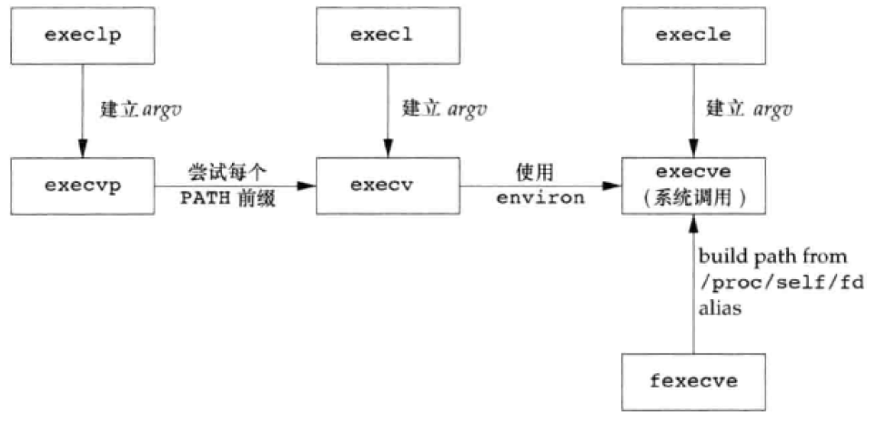
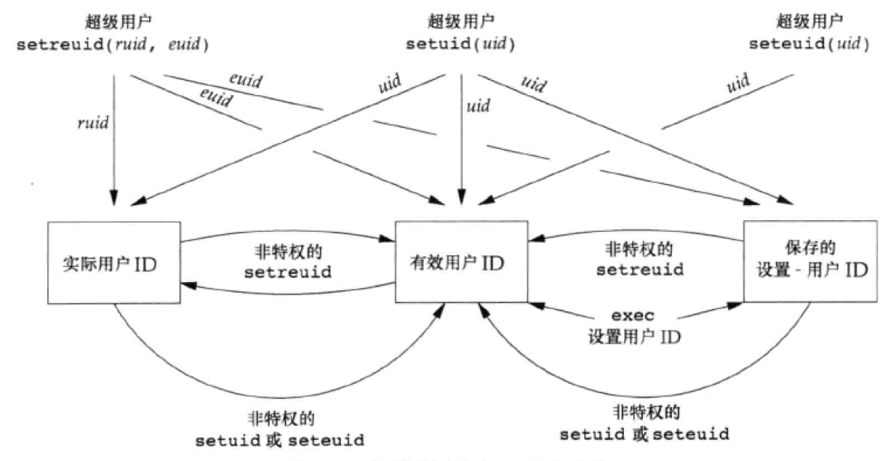

此为第八章笔记
进程标识 每个进程都有一个非负整型表示的唯一进程ID。虽然唯一，但是可复用。
ID为 0 的进程为 调度进程 、 系统进程 或 交换进程(swapper) ，为内核的一部分，在磁盘上不存在可执行文件。
ID为 1 的进程为 init进程 ， 可执行文件为 /sbin/init ，用于初始化相关文件。以root身份运行的普通用户进程，并且为所有孤儿进程的父进程。
以下为一些系统调用，他们均没有出错返回值
1 2 3 4 5 6 7 8 9 10 11 12 13 14 #include <stdio.h> #include <stdlib.h> #include <unistd.h> int main (int argc, char *argv[]) pid_t pid =getpid(); pid_t ppid = getppid(); uid_t uid = getuid(); uid_t euid = geteuid(); gid_t gid = getgid(); gid_t egid = getegid(); exit (EXIT_SUCCESS); }
结果如下
fork 简介 可以使用这个函数创建一个新进程，成为子进程。 fork 之后经常紧随着 exec 。
调用一次，返回两次。子进程返回值为0，父进程返回值为创建的子进程的进程ID。子进程为父进程的副本，共享正文段，其他部分采用 写时复制(Copy-On-Write) 技术，系统将其访问权限设为只读，父子进程中的任一一个试图修改这些区域，则内核只为修改区域的那块内存制作一个副本，通常为虚拟存储系统的一“页”。
fork例子 下面是一个执行的例子
1 2 3 4 5 6 7 8 9 10 11 12 13 14 15 16 17 18 19 20 21 22 23 24 25 26 27 28 29 30 31 32 #include <apue.h> #include <stdio.h> #include <stdlib.h> #include <unistd.h> int globvar = 6 ;char buf[] = "a write to stdout\n" ;int main (int argc, char *argv[]) int var; pid_t pid; var = 88 ; if (write(STDOUT_FILENO, buf, sizeof (buf)-1 ) != sizeof (buf)-1 ) err_sys("write error" ); printf ("before fork\n" ); if ((pid = fork()) < 0 ) { err_sys("fork error" ); } else if (pid == 0 ) { globvar++; var++; } else { sleep(2 ); } printf ("pid = %ld, glob = %d, var = %d\n" , (long )getpid(), globvar, var); exit (EXIT_SUCCESS); }
将其标准输出重定向至一个文件中，结果如下：
1 2 3 4 5 6 7 8 > ./a.out > result.txt > cat result.txt a write to stdout before fork pid = 13815, glob = 7, var = 89 before fork pid = 13814, glob = 6, var = 88
这里牵涉到两个其他的知识点：
一个是 strlen 和 sizeof 的区别：sizeof 在编译时就一个计算出长度了，同时计算时是包含终止的 null 的，而 strlen 为函数调用，且计算时不包含最后终止的 null。
另一个是由于这里为重定向至文件，所以 printf 为全缓冲。在 fork 之前并没有进行 flush 操作，所以它的缓冲区就被复制了一份至子进程中，所以就导致输出了两次“a write to stdout”。
从输出文件的情况可以看出父子进程每个相同的打开描述符共享一个文件表项，且共享一个文件偏移量。
父子进程的区别
fork 的返回值不同进程以及父进程ID不同
子进程的 tms_utime、 tms_stime 、 tms_cutime 、 tms_ustime 均被设置为0
子进程不继承父进程设置的文件锁
子进程的未处理的闹钟被清除、未处理信号集设置为空集
fork失败 主要有两个原因：
系统中已经有太多的进程
实际用户ID的进程总数超过的系统限制（CHILD_MAX）。
vfork 与 fork 类似，但是其目的是创建一个新进程用于 exec 一个新程序。在子进程调用 exec 或 exit 之前，子进程在父进程的空间中运行，且在其调用那两个函数之后父进程才可能被调度运行。如果子进程调用这两个函数之前子进程依赖于父进程的进一步动作，则会导致死锁。
下面的实例程度不需要在父进程中使用 sleep 了。这里如果调用的是 exit 而不是 _exit ，则该程序的输出是不确定的，依赖于标准I/O库的实现，可能输出没有发生变化，或并没有父进程的输出
1 2 3 4 5 6 7 8 9 10 11 12 13 14 15 16 17 18 19 20 21 22 23 24 25 26 27 28 #include <apue.h> #include <stdio.h> #include <stdlib.h> #include <unistd.h> int globvar = 6 ;int main (int argc, char *argv[]) int var; pid_t pid; var = 88 ; printf ("before vfork\n" ); if ((pid = vfork()) < 0 ) { err_sys("vfork error" ); } else if (pid == 0 ) { globvar++; var++; _exit(0 ); } printf ("pid = %ld, glob = %d, var = %d\n" , (long )getpid(), globvar, var); exit (EXIT_SUCCESS); }
输出如下
1 2 before vfork pid = 21753, glob = 7, var = 89
函数 exit 通知父进程子进程的终止：三个终止函数，可以将其退出状态（exit status）作为参数传给函数。异常终止的情况，内核产生一个指示其异常终止原因的终止状态（termination status）。在任意一种情况下，该终止进程的父进程都能用 wait 或 waitpid 函数获取其终止状态。内核为每个终止子进程保存了一定量的信息，当父进程调用以上两个方法时可以获取到。至少包括：进程ID、终止状态已经使用CPU时间总量。
如果父进程在子进程之前终止，则子进程的父进程会变成PID为1的 init进程 。
一个已经终止、但其父进程尚未对其进行善后处理（获取终止子进程相关信息，释放其仍占用的资源）的进程称为 僵死进程（zombie） 。
wait 与 waitpid wait 父函数使用函数 wait 以及 waitpid 等待子进程的退出信号，前者为阻塞等待，后者经过参数设置可以做到异步等待，同时不必等待退出的第一个子进程。 wait 函数的原型如下。
1 2 3 #include <sys/wait.h> pid_t wait(int *statloc);
下面为 wait 函数的使用示例
1 2 3 4 5 6 7 8 9 10 11 12 13 14 15 16 17 18 19 20 21 22 23 24 25 26 27 28 29 30 31 32 33 34 35 36 37 38 39 40 41 42 43 44 45 46 47 48 49 50 51 52 53 54 55 56 57 58 59 60 #include <apue.h> #include <stdio.h> #include <stdlib.h> #include <unistd.h> #include <sys/wait.h> void pr_exit (int status) if (WIFEXITED(status)) { printf ("正常退出，退出状态为：%d\n" , WEXITSTATUS(status)); } else if (WIFSIGNALED(status)) { printf ("不正常退出，信号代码为：%d%s\n" , WTERMSIG(status), #ifdef WCOREDUMP WCOREDUMP(status) ? " (core file generated)" : "" ); #else "" ); #endif } else if (WIFSTOPPED(status)) { printf ("子进程停止，信号代码为：%d\n" , WSTOPSIG(status)); } } void printStatus (pid_t pid) int status; if (wait(&status) != pid) { err_sys("wait error" ); } else { pr_exit(status); } } int main (int argc, char *argv[]) pid_t pid; if ((pid = fork()) < 0 ) { err_sys("fork error" ); } else if (pid == 0 ) { exit (7 ); } printStatus(pid); if ((pid = fork()) < 0 ) { err_sys("fork error" ); } else if (pid == 0 ) { abort (); } printStatus(pid); if ((pid = fork()) < 0 ) { err_sys("fork error" ); } else if (pid == 0 ) { int status = 1 ; status /= 0 ; } printStatus(pid); exit (EXIT_SUCCESS); }
输出结果如下
1 2 3 正常退出，退出状态为：7 不正常退出，信号代码为：6 不正常退出，信号代码为：8
waitpid 函数原型如下
1 2 3 #include <sys/wait.h> pid_t waitpid(pid_t pid, int *statloc, int options);
关于参数 pid：
pid == -1 等待任一子进程。同 wait 等效pid > 0 等待进程ID与 pid 相等的子进程pid == 0 等待组ID等于调度进程组ID的任一子进程pid < -1 等待组ID等于pid绝对值的任一子进程
关于参数options
示例代码如下
1 2 3 4 5 6 7 8 9 10 11 12 13 14 15 16 17 18 19 20 21 22 23 24 25 26 27 28 29 #include <apue.h> #include <stdio.h> #include <stdlib.h> #include <unistd.h> #include <sys/wait.h> int main (void ) pid_t pid; if ((pid = fork()) < 0 ) { err_sys("fork error" ); } else if (pid == 0 ) { if ((pid = fork()) < 0 ) { err_sys("fork error" ); } else if (pid > 0 ) { exit (0 ); } else { sleep(5 ); printf ("第二个孩子，父进程的pid为：%ld\n" , (long )getppid()); exit (0 ); } } if (waitpid(pid, NULL , 0 ) != pid) { err_sys("waitpid error" ); } exit (EXIT_SUCCESS); }
输出结果如下
其他的函数
waitid PDFp214wait3 和 wait4 PDFp215
竞争条件 当多个进程都企图对共享数据某种处理，而最后的结果又取决于进程的运行顺序，则认为发生了 竞争条件（race condition） 。即使已经知道哪一个进程先运行，但是在进程开始后所发送的事情也依赖系统负载 以及内核调度算法
下面列出一个存在竞争的程序
1 2 3 4 5 6 7 8 9 10 11 12 13 14 15 16 17 18 19 20 21 22 23 24 25 26 27 28 29 30 31 32 33 34 35 36 #include <apue.h> #include <stdio.h> #include <stdlib.h> #include <unistd.h> #include <sys/wait.h> static void charatatime (char *) int main (void ) pid_t pid; if ((pid = fork()) < 0 ) { err_sys("fork error" ); } else if (pid == 0 ) { charatatime("output from child\n" ); } else { charatatime("output from parent\n" ); } exit (EXIT_SUCCESS); } static void charatatime (char *str) char *ptr; int c; setbuf(stdout , NULL ); for (ptr = str; (c = *ptr++) != 0 ;) { putc(c, stdout ); } }
输出如下
1 2 3 4 5 6 7 > ./a.out output from pareoutput from child nt > ./a.out ooutput from child utput from parent
函数 exec fork 函数创建新的子进程后，子进程往往要调用 exec 函数执行另一个程序，替换当前的子进程的正文段、数据段、堆段和栈段，使用之前进程的PID。
fork 可以创建新进程， exec 可以初始执行新的程序， exit 函数处理终止， wait 函数等待终止。这些为基本控制原语。
函数原型列表如下：
相关的参数联系如下表:
它们之间的关系如下图：

以下为演示的函数，使用到了需要提供环境变量的函数 execle 以及不需要提供环境变量和可执行程序完成路径的函数 execlp
1 2 3 4 5 6 7 8 9 10 11 12 13 14 15 16 17 18 19 20 21 22 23 24 25 26 27 28 29 30 31 32 33 34 35 #include <apue.h> #include <stdio.h> #include <stdlib.h> #include <unistd.h> #include <sys/wait.h> char *env_init[] = {"USER=unknown" , "PATH=/tmp" , NULL };int main (void ) pid_t pid; if ((pid = fork()) < 0 ) { err_sys("fork error" ); } else if (pid == 0 ) { if (execle("/home/parallels/Workspace/basic/echoall" , "echoall" , "myarg1" , "MY_ARG2" , (char *)0 , env_init) < 0 ) { err_sys("execle error" ); } } if (waitpid(pid, NULL , 0 ) < 0 ) { err_sys("wait error" ); } if ((pid = fork()) < 0 ) { err_sys("fork error" ); } else if (pid == 0 ) { if (execlp("echoall" , "echoall" , "only 1 arg" , (char *)0 ) < 0 ) { err_sys("execlp error" ); } } exit (EXIT_SUCCESS); }
echoall 程序的源代码如下：
1 2 3 4 5 6 7 8 9 10 11 12 13 14 15 16 17 18 #include <stdio.h> #include <stdlib.h> int main (int argc, char *argv[]) int i; char **ptr; extern char **environ; for (i = 0 ; i < argc; i++) printf ("argv[%d]: %s\n" , i, argv[i]); for (ptr = environ; *ptr != 0 ; ptr++) { printf ("%s\n" , *ptr); } exit (EXIT_SUCCESS); }
输出结果如下：
1 2 3 4 5 6 7 8 9 10 11 12 argv[0]: echoall argv[1]: myarg1 argv[2]: MY_ARG2 USER=unknown PATH=/tmp argv[0]: echoall argv[1]: only 1 arg MAIL=/var/mail/parallels SSH_CLIENT=10.211.55.2 50919 22 USER=parallels LC_TIME=zh_CN.UTF-8 .....
更改用户ID和更改组 使用如下函数设置 实际用户ID 和 有效用户ID 以及 实际组ID 和 有效组ID
1 2 3 4 #include <unistd.h> int setuid (uid_t uid) int setgid (gid_t gid)
具体规则如下：
以下函数用于交换 实际用户ID 和 有效用户ID
1 2 3 4 #include <unistd.h> int setreuid (uid_t ruid, uid_t euid) int setregid (gid_t rgid, gid_t egid)
以下函数用户更改 有效用户ID 和 有效组ID
1 2 3 4 #include <unistd.h> int seteuid (uid_t uid) int setegid (gid_t gid)
它们之间的关系如下图：

解释器文件 文件第一行 #! /path/to/bin
函数 system 在程序中执行一段字符串，使用 system 函数，函数原型如下
1 2 3 #include <stdlib.h> int system (const char *cmdstring)
由于其实现中调用了 fork 、 exec 、 waitpid ，所以其包含了三种返回值。
fork 失败或 waitpid 返回除 EINTR 之外的出错，返回 -1，并且设置 errno 以指示错误类型。如果 exec 失败（不能执行shell），则返回 exit(127) 相同的返回值。
否则，为 shell 的终止状态，格式参见 waitpid 部分。
以下为 system 函数的一种实现，以及测试函数
1 2 3 4 5 6 7 8 9 10 11 12 13 14 15 16 17 18 19 20 21 22 23 24 25 26 27 28 29 30 31 32 33 34 35 36 37 38 39 40 41 42 #include <apue.h> #include <stdio.h> #include <stdlib.h> #include <unistd.h> #include <sys/wait.h> #include <errno.h> int system (const char *cmdstring) pid_t pid; int status; if (cmdstring == NULL ) { return (1 ); } if ((pid = fork()) < 0 ) { status = -1 ; } else if (pid == 0 ) { execl("/bin/sh" , "sh" , "-c" , cmdstring, (char *)0 ); _exit(127 ); } else { while (waitpid(pid, &status, 0 ) < 0 ) { if (errno != EINTR) { status = -1 ; break ; } } } return status; } int main (int argc, char *argv[]) int status; if (argc < 2 ) { err_quit("command-line argument required" ); } if ((status = system(argv[1 ])) < 0 ) { err_sys("system() error" ); } pr_exit(status); exit (EXIT_SUCCESS); }
使用其调用如下代码编译成的程序
1 2 3 4 5 6 7 8 9 #include <stdio.h> #include <stdlib.h> #include <unistd.h> int main (void ) printf ("实际用户ID：%d，有效用户ID：%d\n" , getuid(), geteuid()); exit (EXIT_SUCCESS); }
执行结果如下
1 2 3 > a.out printuids 实际用户ID：1000，有效用户ID：1000 normal termination, exit status = 0
进程时间 使用 times 函数获取
1 2 3 #include <sys/times.h> clock_t times(struct tms *buf)
而 tms 结构体的格式如下
1 2 3 4 5 6 7 8 9 struct tms { clock_t tms_utime; clock_t tms_stime; clock_t tms_cutime; clock_t tms_cstime; };
下面的例子可以对输入的shell脚本字符串执行并统计运行时间
1 2 3 4 5 6 7 8 9 10 11 12 13 14 15 16 17 18 19 20 21 22 23 24 25 26 27 28 29 30 31 32 33 34 35 36 37 38 39 40 41 42 43 44 45 46 47 48 49 50 51 52 53 54 55 #include <apue.h> #include <stdio.h> #include <stdlib.h> #include <unistd.h> #include <sys/times.h> static void pr_times (clock_t , struct tms *, struct tms *) static void do_cmd (char *) int main (int argc, char *argv[]) int i; setbuf(stdout , NULL ); for (i = 1 ; i < argc; i++) { do_cmd(argv[i]); } exit (EXIT_SUCCESS); } static void do_cmd (char *cmd) struct tms tmsstart , tmsend ; clock_t start, end; int status; printf ("\ncommand: %s\n" , cmd); if ((start = times(&tmsstart)) == -1 ) { err_sys("times error" ); } if ((status = system(cmd)) < 0 ) { err_sys("system() error" ); } if ((end = times(&tmsend)) == -1 ) { err_sys("times error" ); } pr_times(end - start, &tmsstart, &tmsend); pr_exit(status); } static void pr_times (clock_t real, struct tms *tmsstart, struct tms *tmsend) static long clktck = 0 ; if (clktck == 0 ) { if ((clktck = sysconf(_SC_CLK_TCK)) < 0 ) { err_sys("sysconf error" ); } } printf ("real:\t%7.2f\n" , real / (double ) clktck ); printf ("user:\t%7.2f\n" , (tmsend->tms_utime - tmsstart->tms_utime) / (double ) clktck); printf ("sys:\t%7.2f\n" , (tmsend->tms_stime - tmsstart->tms_stime) / (double ) clktck); printf ("child user:\t%7.2f\n" , (tmsend->tms_cutime - tmsstart->tms_cutime) / (double ) clktck); printf ("child sys:\t%7.2f\n" , (tmsend->tms_cstime - tmsstart->tms_cstime) / (double ) clktck); }
执行输出结果如下
1 2 3 4 5 6 7 8 9 10 11 12 13 14 15 16 17 18 19 20 21 22 23 24 25 26 > ./a.out "sleep 5" "date" "man bash > /dev/null" command: sleep 5 real: 5.00 user: 0.00 sys: 0.00 child user: 0.00 child sys: 0.00 normal termination, exit status = 0 command: date 2019年 08月 24日 星期六 14:34:04 CST real: 0.01 user: 0.00 sys: 0.00 child user: 0.00 child sys: 0.00 normal termination, exit status = 0 command: man bash > /dev/null real: 0.17 user: 0.00 sys: 0.00 child user: 0.20 child sys: 0.00 normal termination, exit status = 0